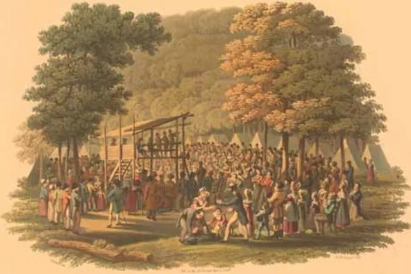
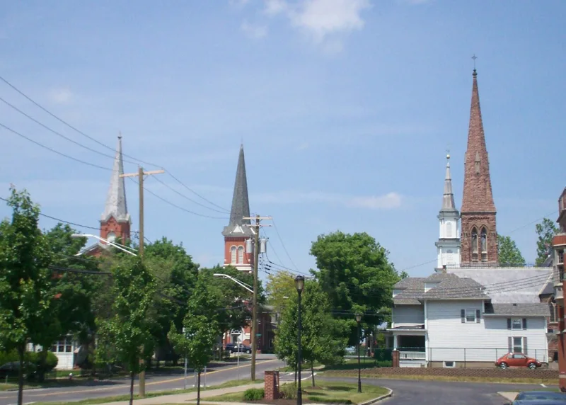

LDS scholars have a real answer here. Say so before your friend does.
That there was an "unusual excitement on the subject of religion" in the Palmyra area in 1820, which added "great multitudes" to the churches, and that this is what sent him to pray.
Wesley Walters went looking in 1967. He examined Presbyterian, Methodist and Baptist records for Palmyra and found no significant revival in 1820.
The major local revival was in 1824-25 — after the date given.
Milton Backman replied in 1969, documenting Methodist camp meetings near Palmyra in 1819-20 and revival activity across the wider Genesee region. "In that region of country" is a loose phrase and need not mean Palmyra alone.
Genuinely arguable. Backman's reply is real and should be given.
But the account describes multitudes joining churches locally, and the membership numbers for those years do not show it.
"When was the big revival in Palmyra? It's worth checking the church records."


Backman found camp meetings near Palmyra in 1819 and 1820, across the wider region.
Milton Backman answered directly. He wrote 'Awakenings in the Burned-over District' in BYU Studies in 1969. He set out Methodist camp meetings near Palmyra in 1819 and 1820. He also found revival work across the wider Genesee region.
His point is that Smith described a stirring across a whole region. He did not describe a formal Palmyra revival with counted new members. The Gospel Topics essay takes that reading.
Smith was recalling his teenage years. He wrote of religious excitement in 'the whole district of country'. A Palmyra camp meeting in 1818, and an 1819 Methodist conference at nearby Vienna, fit that.
Arguable both ways. The Palmyra records came back blank, but the wider reading is fair.
Walters's blank finding stands largely unanswered in the church records. There was no 1820 Palmyra revival that added 'great multitudes' to the churches.
But Backman's camp meetings across the region in 1819 and 1820 give the 1838 account a fair looser reading.
It turns on how tightly you must read 'great multitudes' joining churches.